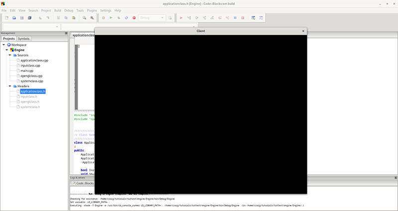

This tutorial will be the first introduction to working with OpenGL 4.0 on Linux and using C++ to do so.
We will address how to initialize and shut down OpenGL as well as how to render to a window.
We will also cover the basics on how to use X11 which is the windowing and input system Linux uses.
Now there are several versions of OpenGL 4, but we will cover just the base version 4.0 in these tutorials.
We will start this tutorial by filling out the previously empty four classes from the previous tutorial.
The four classes that make up the frame work are SystemClass, InputClass, OpenGLClass, and ApplicationClass.
Systemclass.h
////////////////////////////////////////////////////////////////////////////////
// Filename: systemclass.h
////////////////////////////////////////////////////////////////////////////////
#ifndef _SYSTEMCLASS_H_
#define _SYSTEMCLASS_H_
//////////////
// INCLUDES //
//////////////
#include <unistd.h>
///////////////////////
// MY CLASS INCLUDES //
///////////////////////
#include "applicationclass.h"
The definition of this class is fairly simple. We see the Initialize, Shutdown, and Frame functions that were called in main.cpp defined here.
There are also some private functions that will be called inside those functions for creating and destroying our window and reading X11 input.
And finally, we have some private variables including m_Application and m_Input which will be pointers to the two objects that will handle the graphics and the input.
////////////////////////////////////////////////////////////////////////////////
// Class Name: SystemClass
////////////////////////////////////////////////////////////////////////////////
class SystemClass
{
public:
SystemClass();
SystemClass(const SystemClass&);
~SystemClass();
bool Initialize();
void Shutdown();
void Frame();
private:
bool InitializeWindow(int&, int&);
void ShutdownWindow();
void ReadInput();
private:
ApplicationClass* m_Application;
InputClass* m_Input;
Display* m_videoDisplay;
Window m_hwnd;
GLXContext m_renderingContext;
};
#endif
Now let's take a look at the system class source file:
Systemclass.cpp
////////////////////////////////////////////////////////////////////////////////
// Filename: systemclass.cpp
////////////////////////////////////////////////////////////////////////////////
#include "systemclass.h"
In the class constructor we initialize the object pointers to null.
This is important because if the initialization of these objects fail then the Shutdown function further on will attempt to clean up those objects.
If the objects are not null then it assumes they were valid created objects and that they need to be cleaned up.
It is also good practice to initialize all pointers and variables to null in your applications.
SystemClass::SystemClass()
{
m_Input = 0;
m_Application = 0;
}
Here I create an empty copy constructor and empty class destructor.
In this class I don't have need of them but if not defined some compilers will generate them for you, and in which case I'd rather they be empty.
SystemClass::SystemClass(const SystemClass& other)
{
}
SystemClass::~SystemClass()
{
}
The following Initialize function does all the setup for the application.
It first initializes the Input object which will handle all of the user input.
Next it calls InitializeWindow which will create the X11 window for our application to use.
And then finally it creates and initializes the Application object which will be doing all of the rendering of graphics to the screen.
bool SystemClass::Initialize()
{
int screenWidth, screenHeight;
bool result;
// Create and initialize the input object.
m_Input = new InputClass;
m_Input->Initialize();
// Initialize the screen size.
screenWidth = 0;
screenHeight = 0;
// Initialize the X11 window.
result = InitializeWindow(screenWidth, screenHeight);
if(!result)
{
return false;
}
// Create and initialize the application object.
m_Application = new ApplicationClass;
result = m_Application->Initialize(m_videoDisplay, m_hwnd, screenWidth, screenHeight);
if(!result)
{
return false;
}
return true;
}
The Shutdown function does the clean-up.
It shuts down and releases everything associated with the application and input object. As well it also shuts down the window and cleans up the handles associated with it.
void SystemClass::Shutdown()
{
// Release the application object.
if(m_Application)
{
m_Application->Shutdown();
delete m_Application;
m_Application = 0;
}
// Release the X11 window.
ShutdownWindow();
// Release the input object.
if(m_Input)
{
delete m_Input;
m_Input = 0;
}
return;
}
The Frame function is where our application will loop and do all of the application processing until we decide to quit.
The application processing is done in the Frame function which is called each loop.
This is an important concept to understand as now the rest of our application must be written using this looping methodology.
void SystemClass::Frame()
{
bool done, result;
// Loop until the application is finished running.
done = false;
while(!done)
{
// Read the X11 input.
ReadInput();
// Do the frame processing for the application object.
result = m_Application->Frame(m_Input);
if(!result)
{
done = true;
}
}
return;
}
The InitializeWindows function is where we put the code to build the window we will use for rendering to.
It returns screenWidth and screenHeight back to the calling function so we can make use of those variables throughout the application.
We create the window using some default settings to initialize a plain black window.
The function will make either a small window or make a full screen window depending on a global variable called FULL_SCREEN.
If this variable is set to true then we make the screen cover the entire users' desktop window.
If it is set to false, we just make a 1024x768 window in the middle of the screen.
I placed the FULL_SCREEN global variable at the top of the applicationclass.h file in case we need to modify it.
Now the system Linux uses for windowing is called X11.
It is important to note that X11 was designed primarily to run the application code on one server and then display the output to multiple monitors over a network.
In the case of these tutorials, we will just be running the code on our desktop machine and displaying to the primary monitor.
However, when you are reading X11 documentation the functions will often be explained in a client-server relationship, so this should now help you understand why that is.
bool SystemClass::InitializeWindow(int& screenWidth, int& screenHeight)
{
Window rootWindow;
XVisualInfo* visualInfo;
GLint attributeList[15];
Colormap colorMap;
XSetWindowAttributes setWindowAttributes;
Screen* defaultScreen;
bool result;
int majorVersion;
Atom wmState, fullScreenState, motifHints;
XEvent fullScreenEvent;
long motifHintList[5];
int status, posX, posY, defaultScreenWidth, defaultScreenHeight;
So, we start by opening a connection to the X server to get a handle to the root window.
// Open a connection to the X server on the local computer.
m_videoDisplay = XOpenDisplay(NULL);
if(m_videoDisplay == NULL)
{
return false;
}
// Get a handle to the root window.
rootWindow = DefaultRootWindow(m_videoDisplay);
Now that we have the handle, we can setup our video display.
We fill out an attribute list array for a double buffered 32-bit RGBA display and then create a color map with that information so we can pass it into the create window function.
// Setup the OpenGL attributes for the window.
attributeList[0] = GLX_RGBA; // Support for 24 bit color and an alpha channel.
attributeList[1] = GLX_DEPTH_SIZE; // Support for 24 bit depth buffer.
attributeList[2] = 24;
attributeList[3] = GLX_STENCIL_SIZE; // Support for 8 bit stencil buffer.
attributeList[4] = 8;
attributeList[5] = GLX_DOUBLEBUFFER; // Support for double buffering.
attributeList[6] = GLX_RED_SIZE; // 8 bits for each channel.
attributeList[7] = 8;
attributeList[8] = GLX_GREEN_SIZE;
attributeList[9] = 8;
attributeList[10] = GLX_BLUE_SIZE;
attributeList[11] = 8;
attributeList[12] = GLX_ALPHA_SIZE;
attributeList[13] = 8;
attributeList[14] = None; // Null terminate the attribute list.
// Query for a visual format that fits the attributes we want.
visualInfo = glXChooseVisual(m_videoDisplay, 0, attributeList);
if(visualInfo == NULL)
{
return false;
}
// Create a color map for the window for the specified visual type.
colorMap = XCreateColormap(m_videoDisplay, rootWindow, visualInfo->visual, AllocNone);
When setting the windows attributes, we also send in not just the color map, but also the event mask which lets it know we want to process input to and from this window as well.
// Fill out the structure for setting the window attributes.
setWindowAttributes.colormap = colorMap;
setWindowAttributes.event_mask = KeyPressMask | KeyReleaseMask | ButtonPressMask | ButtonReleaseMask;
If full screen is set then we will request the entire users' desktop for displaying the window.
If not then we have it just create a 1024x768 window.
// Get the size of the default screen.
if(FULL_SCREEN)
{
defaultScreen = XDefaultScreenOfDisplay(m_videoDisplay);
screenWidth = XWidthOfScreen(defaultScreen);
screenHeight = XHeightOfScreen(defaultScreen);
}
else
{
screenWidth = 1024;
screenHeight = 768;
}
Now we create the window with all the settings we have chosen and then map that created window to the video display so that it will show up on the user's desktop.
// Create the window with the desired settings.
m_hwnd = XCreateWindow(m_videoDisplay, rootWindow, 0, 0, screenWidth, screenHeight, 0, visualInfo->depth,
InputOutput, visualInfo->visual, CWColormap | CWEventMask, &setWindowAttributes);
// Map the newly created window to the video display.
XMapWindow(m_videoDisplay, m_hwnd);
We name the window here. If it is not in full screen then you will see the name in the top bar of the window. I have named it "Engine" but you can name it whatever you like.
// Set the name of the window.
XStoreName(m_videoDisplay, m_hwnd, "Engine");
Now if you have chosen full screen then you will need to send a full screen event to the X11 server.
Also you will need to send a motif hint to remove the border as well.
We use XSendEvent and XChangeProperty to do these two things.
// If full screen mode then we send the full screen event and remove the border decoration.
if(FULL_SCREEN)
{
// Setup the full screen states.
wmState = XInternAtom(m_videoDisplay, "_NET_WM_STATE", False);
fullScreenState = XInternAtom(m_videoDisplay, "_NET_WM_STATE_FULLSCREEN", False);
// Setup the X11 event message that we need to send to make the screen go full screen mode.
memset(&fullScreenEvent, 0, sizeof(fullScreenEvent));
fullScreenEvent.type = ClientMessage;
fullScreenEvent.xclient.window = m_hwnd;
fullScreenEvent.xclient.message_type = wmState;
fullScreenEvent.xclient.format = 32;
fullScreenEvent.xclient.data.l[0] = 1;
fullScreenEvent.xclient.data.l[1] = fullScreenState;
fullScreenEvent.xclient.data.l[2] = 0;
fullScreenEvent.xclient.data.l[3] = 0;
fullScreenEvent.xclient.data.l[4] = 0;
// Send the full screen event message to the X11 server.
status = XSendEvent(m_videoDisplay, DefaultRootWindow(m_videoDisplay), False, SubstructureRedirectMask | SubstructureNotifyMask, &fullScreenEvent);
if(status != 1)
{
return false;
}
// Setup the motif hints to remove the border in full screen mode.
motifHints = XInternAtom(m_videoDisplay, "_MOTIF_WM_HINTS", False);
motifHintList[0] = 2; // Remove border.
motifHintList[1] = 0;
motifHintList[2] = 0;
motifHintList[3] = 0;
motifHintList[4] = 0;
// Change the window property and remove the border.
status = XChangeProperty(m_videoDisplay, m_hwnd, motifHints, motifHints, 32, PropModeReplace, (unsigned char*)&motifHintList, 5);
if(status != 1)
{
return false;
}
// Flush the display to apply all the full screen settings.
status = XFlush(m_videoDisplay);
if(status != 1)
{
return false;
}
// Now sleep for one second for the flush to occur before making a gl context, or if too early the screen sets squished in full screen sometimes.
sleep(1);
}
Now that we have a window, we need to enable an OpenGL rendering context in it.
This will allow us to render graphics using OpenGL to the X11 window.
// Create an OpenGL rendering context.
m_renderingContext = glXCreateContext(m_videoDisplay, visualInfo, NULL, GL_TRUE);
if(m_renderingContext == NULL)
{
return false;
}
// Attach the OpenGL rendering context to the newly created window.
result = glXMakeCurrent(m_videoDisplay, m_hwnd, m_renderingContext);
if(!result)
{
return false;
}
We do some final checks here to ensure that the video card rendering the graphics can support OpenGL 4.0 at a minimum.
We also check to make sure that we did in fact get a direct rendering context so that we are using the hardware acceleration on the video card and not being passed through a software emulation layer.
And finally, we also check to make sure if we are in full screen that it did move the window to the corner and give us the full resolution of the screen.
If has not provided the correct dimensions for a window then we resize until it is resized with our desired settings.
// Check that OpenGL 4.0 is supported at a minimum.
glGetIntegerv(GL_MAJOR_VERSION, &majorVersion);
if(majorVersion < 4)
{
return false;
}
// Confirm that we have a direct rendering context.
result = glXIsDirect(m_videoDisplay, m_renderingContext);
if(!result)
{
return false;
}
// If windowed then move the window to the middle of the screen.
if(!FULL_SCREEN)
{
defaultScreen = XDefaultScreenOfDisplay(m_videoDisplay);
defaultScreenWidth = XWidthOfScreen(defaultScreen);
defaultScreenHeight = XHeightOfScreen(defaultScreen);
posX = (defaultScreenWidth - screenWidth) / 2;
posY = (defaultScreenHeight - screenHeight) / 2;
status = XMoveWindow(m_videoDisplay, m_hwnd, posX, posY);
if(status != 1)
{
return false;
}
}
return true;
}
ShutdownWindow does just that.
It returns the screen settings back to normal and releases the window and the handles associated with it.
void SystemClass::ShutdownWindow()
{
// Shutdown and close the window.
glXMakeCurrent(m_videoDisplay, None, NULL);
glXDestroyContext(m_videoDisplay, m_renderingContext);
XUnmapWindow(m_videoDisplay, m_hwnd);
XDestroyWindow(m_videoDisplay, m_hwnd);
XCloseDisplay(m_videoDisplay);
return;
}
The ReadInput function just reads key up and key down messages from the X11 window and sends those keypresses to our m_Input object for us to process in the ApplicationClass Frame function on each loop.
void SystemClass::ReadInput()
{
XEvent event;
long eventMask;
bool foundEvent;
char keyBuffer[32];
KeySym keySymbol;
// Set the event mask to the types of events we are interested in.
eventMask = KeyPressMask | KeyReleaseMask;
// Perform the frame processing for the application.
foundEvent = XCheckWindowEvent(m_videoDisplay, m_hwnd, eventMask, &event);
if(foundEvent)
{
// Key press.
if(event.type == KeyPress)
{
XLookupString(&event.xkey, keyBuffer, sizeof(keyBuffer), &keySymbol, NULL);
m_Input->KeyDown((int)keySymbol);
}
// Key release.
if(event.type == KeyRelease)
{
XLookupString(&event.xkey, keyBuffer, sizeof(keyBuffer), &keySymbol, NULL);
m_Input->KeyUp((int)keySymbol);
}
}
return;
}
Inputclass.h
The InputClass is very simple for now and will be expanded in a future tutorial.
But for now, it just reads key up and down input and only processes if the escape key has been pressed or not.
////////////////////////////////////////////////////////////////////////////////
// Filename: inputclass.h
////////////////////////////////////////////////////////////////////////////////
#ifndef _INPUTCLASS_H_
#define _INPUTCLASS_H_
/////////////
// DEFINES //
/////////////
const int KEY_ESCAPE = 0;
////////////////////////////////////////////////////////////////////////////////
// Class name: InputClass
////////////////////////////////////////////////////////////////////////////////
class InputClass
{
public:
InputClass();
InputClass(const InputClass&);
~InputClass();
void Initialize();
void KeyDown(int);
void KeyUp(int);
bool IsEscapePressed();
private:
bool m_keyboardState[256];
};
#endif
Inputclass.cpp
////////////////////////////////////////////////////////////////////////////////
// Filename: inputclass.cpp
////////////////////////////////////////////////////////////////////////////////
#include "inputclass.h"
InputClass::InputClass()
{
}
InputClass::InputClass(const InputClass& other)
{
}
InputClass::~InputClass()
{
}
void InputClass::Initialize()
{
int i;
// Initialize the keyboard state.
for(i=0; i<256; i++)
{
m_keyboardState[i] = false;
}
return;
}
void InputClass::KeyDown(int keySymbol)
{
if(keySymbol == 65307) { m_keyboardState[KEY_ESCAPE] = true; }
return;
}
void InputClass::KeyUp(int keySymbol)
{
if(keySymbol == 65307) { m_keyboardState[KEY_ESCAPE] = false; }
return;
}
bool InputClass::IsEscapePressed()
{
return m_keyboardState[KEY_ESCAPE];
}
Openglclass.h
The OpenGL class will encapsulate all of the main OpenGL functionality inside a single class.
We will instantiate that single class and then pass a pointer throughout our application so that it is simple to make OpenGL calls anywhere we need them.
Likewise, any math functions directly related to OpenGL will be kept in this class as well.
Now the gl.h header only contains the defines, functions, and function pointers for earlier versions of OpenGL.
All newer OpenGL 4.0 functionality is actually implemented in the display driver for your video card in the form of extensions.
You can find the names of all the extensions in the OpenGL 4.0 spec that the Khronos Group maintains on their website in the OpenGL 4.0 documentation.
You can also download files such as wglext.h and glext.h which contain a large number of them as well.
For these tutorials we only need a small subset of all the functions so I have included the defines, typedefs, and function pointers that we will use in this header file.
This will also allow us to simplify all calls to the OpenGL 4.0 functions through our own OpenGLClass.
////////////////////////////////////////////////////////////////////////////////
// Filename: openglclass.h
////////////////////////////////////////////////////////////////////////////////
#ifndef _OPENGLCLASS_H_
#define _OPENGLCLASS_H_
//////////////
// INCLUDES //
//////////////
#include <GL/gl.h>
#include <GL/glx.h>
#include <string.h>
#include <math.h>
The following are the typedefs that we need to access the OpenGL 4.0 functionality:
//////////////
// TYPEDEFS //
//////////////
typedef GLuint (APIENTRY * PFNGLCREATESHADERPROC) (GLenum type);
typedef void (APIENTRY * PFNGLCOMPILESHADERPROC) (GLuint shader);
typedef void (APIENTRY * PFNGLGETSHADERIVPROC) (GLuint shader, GLenum pname, GLint *params);
typedef void (APIENTRY * PFNGLGETSHADERINFOLOGPROC) (GLuint shader, GLsizei bufSize, GLsizei *length, char *infoLog);
typedef GLuint (APIENTRY * PFNGLCREATEPROGRAMPROC) (void);
typedef void (APIENTRY * PFNGLATTACHSHADERPROC) (GLuint program, GLuint shader);
typedef void (APIENTRY * PFNGLBINDATTRIBLOCATIONPROC) (GLuint program, GLuint index, const char *name);
typedef void (APIENTRY * PFNGLLINKPROGRAMPROC) (GLuint program);
typedef void (APIENTRY * PFNGLGETPROGRAMIVPROC) (GLuint program, GLenum pname, GLint *params);
typedef void (APIENTRY * PFNGLGETPROGRAMINFOLOGPROC) (GLuint program, GLsizei bufSize, GLsizei *length, char *infoLog);
typedef void (APIENTRY * PFNGLDETACHSHADERPROC) (GLuint program, GLuint shader);
typedef void (APIENTRY * PFNGLDELETESHADERPROC) (GLuint shader);
typedef void (APIENTRY * PFNGLDELETEPROGRAMPROC) (GLuint program);
typedef void (APIENTRY * PFNGLUSEPROGRAMPROC) (GLuint program);
typedef GLint (APIENTRY * PFNGLGETUNIFORMLOCATIONPROC) (GLuint program, const char *name);
typedef void (APIENTRY * PFNGLUNIFORMMATRIX4FVPROC) (GLint location, GLsizei count, GLboolean transpose, const GLfloat *value);
typedef void (APIENTRY * PFNGLGENVERTEXARRAYSPROC) (GLsizei n, GLuint *arrays);
typedef void (APIENTRY * PFNGLBINDVERTEXARRAYPROC) (GLuint array);
typedef void (APIENTRY * PFNGLGENBUFFERSPROC) (GLsizei n, GLuint *buffers);
typedef void (APIENTRY * PFNGLBINDBUFFERPROC) (GLenum target, GLuint buffer);
typedef void (APIENTRY * PFNGLBUFFERDATAPROC) (GLenum target, ptrdiff_t size, const GLvoid *data, GLenum usage);
typedef void (APIENTRY * PFNGLENABLEVERTEXATTRIBARRAYPROC) (GLuint index);
typedef void (APIENTRY * PFNGLVERTEXATTRIBPOINTERPROC) (GLuint index, GLint size, GLenum type, GLboolean normalized, GLsizei stride, const GLvoid *pointer);
typedef void (APIENTRY * PFNGLDELETEBUFFERSPROC) (GLsizei n, const GLuint *buffers);
typedef void (APIENTRY * PFNGLDELETEVERTEXARRAYSPROC) (GLsizei n, const GLuint *arrays);
typedef void (APIENTRY * PFNGLUNIFORM1IPROC) (GLint location, GLint v0);
typedef void (APIENTRY * PFNGLACTIVETEXTUREPROC) (GLenum texture);
typedef void (APIENTRY * PFNGLGENERATEMIPMAPPROC) (GLenum target);
typedef void (APIENTRY * PFNGLUNIFORM2FVPROC) (GLint location, GLsizei count, const GLfloat *value);
typedef void (APIENTRY * PFNGLUNIFORM3FVPROC) (GLint location, GLsizei count, const GLfloat *value);
typedef void (APIENTRY * PFNGLUNIFORM4FVPROC) (GLint location, GLsizei count, const GLfloat *value);
typedef void *(APIENTRY * PFNGLMAPBUFFERPROC) (GLenum target, GLenum access);
typedef GLboolean (APIENTRY * PFNGLUNMAPBUFFERPROC) (GLenum target);
typedef void (APIENTRY * PFNGLXSWAPINTERVALEXTPROC) (Display* dpy, GLXDrawable drawable, int interval);
typedef void (APIENTRY * PFNGLUNIFORM1FPROC) (GLint location, GLfloat v0);
typedef void (APIENTRY * PFNGLGENFRAMEBUFFERSPROC) (GLsizei n, GLuint *framebuffers);
typedef void (APIENTRY * PFNGLDELETEFRAMEBUFFERSPROC) (GLsizei n, const GLuint *framebuffers);
typedef void (APIENTRY * PFNGLBINDFRAMEBUFFERPROC) (GLenum target, GLuint framebuffer);
typedef void (APIENTRY * PFNGLFRAMEBUFFERTEXTURE2DPROC) (GLenum target, GLenum attachment, GLenum textarget, GLuint texture, GLint level);
typedef void (APIENTRY * PFNGLGENRENDERBUFFERSPROC) (GLsizei n, GLuint *renderbuffers);
typedef void (APIENTRY * PFNGLBINDRENDERBUFFERPROC) (GLenum target, GLuint renderbuffer);
typedef void (APIENTRY * PFNGLRENDERBUFFERSTORAGEPROC) (GLenum target, GLenum internalformat, GLsizei width, GLsizei height);
typedef void (APIENTRY * PFNGLFRAMEBUFFERRENDERBUFFERPROC) (GLenum target, GLenum attachment, GLenum renderbuffertarget, GLuint renderbuffer);
typedef void (APIENTRY * PFNGLDRAWBUFFERSARBPROC) (GLsizei n, const GLenum *bufs);
typedef void (APIENTRY * PFNGLDELETERENDERBUFFERSPROC) (GLsizei n, const GLuint *renderbuffers);
typedef void (APIENTRYP PFNGLBLENDFUNCSEPARATEPROC) (GLenum sfactorRGB, GLenum dfactorRGB, GLenum sfactorAlpha, GLenum dfactorAlpha);
The class definition for the OpenGLClass is kept as simple as possible here.
It has the regular constructor, copy constructor, and destructor.
Then more importantly it has the Initialize and Shutdown function, this will be what we are mainly focused on in this tutorial.
Other than that, I have a number of math helper functions the deal with any matrix math we will need as well as a couple functions for changing the depth and alpha states.
////////////////////////////////////////////////////////////////////////////////
// Class Name: OpenGLClass
////////////////////////////////////////////////////////////////////////////////
class OpenGLClass
{
public:
OpenGLClass();
OpenGLClass(const OpenGLClass&);
~OpenGLClass();
The Initialize and Shutdown function, as well as the two functions for starting and stopping the drawing of the scene.
bool Initialize(Display*, Window, int, int, float, float, bool);
void Shutdown();
void BeginScene(float, float, float, float);
void EndScene();
These functions build and retrieve some very commonly used matrices.
void BuildIdentityMatrix(float*);
void BuildPerspectiveFovMatrix(float*, float, float, float, float);
void BuildOrthoMatrix(float*, float, float, float, float);
void GetWorldMatrix(float*);
void GetProjectionMatrix(float*);
void GetOrthoMatrix(float*);
Matrix math helper functions.
void MatrixRotationX(float*, float);
void MatrixRotationY(float*, float);
void MatrixRotationZ(float*, float);
void MatrixTranslation(float*, float, float, float);
void MatrixScale(float*, float, float, float);
void MatrixTranspose(float*, float*);
void MatrixMultiply(float*, float*, float*);
void MatrixInverse(float*, float*);
The following is where we will add functions that are used for setting rendering states.
We will start with these two for now.
void TurnZBufferOn();
void TurnZBufferOff();
private:
bool LoadExtensionList();
These are the function pointers that will be used for interfacing with OpenGL 4.0.
I have made them public so we can call them easily using just a pointer to this class:
public:
PFNGLCREATESHADERPROC glCreateShader;
PFNGLSHADERSOURCEPROC glShaderSource;
PFNGLCOMPILESHADERPROC glCompileShader;
PFNGLGETSHADERIVPROC glGetShaderiv;
PFNGLGETSHADERINFOLOGPROC glGetShaderInfoLog;
PFNGLCREATEPROGRAMPROC glCreateProgram;
PFNGLATTACHSHADERPROC glAttachShader;
PFNGLBINDATTRIBLOCATIONPROC glBindAttribLocation;
PFNGLLINKPROGRAMPROC glLinkProgram;
PFNGLGETPROGRAMIVPROC glGetProgramiv;
PFNGLGETPROGRAMINFOLOGPROC glGetProgramInfoLog;
PFNGLDETACHSHADERPROC glDetachShader;
PFNGLDELETESHADERPROC glDeleteShader;
PFNGLDELETEPROGRAMPROC glDeleteProgram;
PFNGLUSEPROGRAMPROC glUseProgram;
PFNGLGETUNIFORMLOCATIONPROC glGetUniformLocation;
PFNGLUNIFORMMATRIX4FVPROC glUniformMatrix4fv;
PFNGLGENVERTEXARRAYSPROC glGenVertexArrays;
PFNGLBINDVERTEXARRAYPROC glBindVertexArray;
PFNGLGENBUFFERSPROC glGenBuffers;
PFNGLBINDBUFFERPROC glBindBuffer;
PFNGLBUFFERDATAPROC glBufferData;
PFNGLENABLEVERTEXATTRIBARRAYPROC glEnableVertexAttribArray;
PFNGLVERTEXATTRIBPOINTERPROC glVertexAttribPointer;
PFNGLDELETEBUFFERSPROC glDeleteBuffers;
PFNGLDELETEVERTEXARRAYSPROC glDeleteVertexArrays;
PFNGLUNIFORM1IPROC glUniform1i;
PFNGLACTIVETEXTUREPROC glActiveTexture;
PFNGLGENERATEMIPMAPPROC glGenerateMipmap;
PFNGLUNIFORM2FVPROC glUniform2fv;
PFNGLUNIFORM3FVPROC glUniform3fv;
PFNGLUNIFORM4FVPROC glUniform4fv;
PFNGLMAPBUFFERPROC glMapBuffer;
PFNGLUNMAPBUFFERPROC glUnmapBuffer;
PFNGLXSWAPINTERVALEXTPROC glXSwapIntervalEXT;
PFNGLUNIFORM1FPROC glUniform1f;
PFNGLGENFRAMEBUFFERSPROC glGenFramebuffers;
PFNGLDELETEFRAMEBUFFERSPROC glDeleteFramebuffers;
PFNGLBINDFRAMEBUFFERPROC glBindFramebuffer;
PFNGLFRAMEBUFFERTEXTURE2DPROC glFramebufferTexture2D;
PFNGLGENRENDERBUFFERSPROC glGenRenderbuffers;
PFNGLBINDRENDERBUFFERPROC glBindRenderbuffer;
PFNGLRENDERBUFFERSTORAGEPROC glRenderbufferStorage;
PFNGLFRAMEBUFFERRENDERBUFFERPROC glFramebufferRenderbuffer;
PFNGLDRAWBUFFERSARBPROC glDrawBuffers;
PFNGLDELETERENDERBUFFERSPROC glDeleteRenderbuffers;
PFNGLBLENDFUNCSEPARATEPROC glBlendFuncSeparate;
The private variables of this class will be used for maintaining some of our display settings as well as some of the commonly used matrices.
private:
Display* m_display;
Window m_hwnd;
float m_worldMatrix[16];
float m_projectionMatrix[16];
float m_orthoMatrix[16];
float m_screenWidth, m_screenHeight;
};
#endif
Openglclass.cpp
////////////////////////////////////////////////////////////////////////////////
// Filename: openglclass.cpp
////////////////////////////////////////////////////////////////////////////////
#include "openglclass.h"
OpenGLClass::OpenGLClass()
{
}
OpenGLClass::OpenGLClass(const OpenGLClass& other)
{
}
OpenGLClass::~OpenGLClass()
{
}
bool OpenGLClass::Initialize(Display* display, Window win, int screenWidth, int screenHeight, float screenNear, float screenDepth, bool vsync)
{
GLXDrawable drawable;
float fieldOfView, screenAspect;
bool result;
// Store the screen size.
m_screenWidth = screenWidth;
m_screenHeight = screenHeight;
The Initialize function begins by initializing all of the extensions that we have listed in the header file so we can access the OpenGL 4.0 functionality.
// Load the OpenGL extensions that will be used by this program.
result = LoadExtensionList();
if(!result)
{
return false;
}
Once that is done, we will keep copies of the handles to our video display and window.
// Store copies of the display and window pointers.
m_display = display;
m_hwnd = win;
Here we setup the depth buffer. There will be an entire tutorial on just how this works later on.
// Set the depth buffer to be entirely cleared to 1.0 values.
glClearDepth(1.0f);
// Enable depth testing.
glEnable(GL_DEPTH_TEST);
One of the more important things when setting up OpenGL is choosing a coordinate system.
This affects which direction the Z axis faces, which direction rotations turn, how texture coordinates work, and so forth.
It also affects how 3D models from modeling programs needed to be exported so that your program can read them without having to spend processing on doing conversions.
I find the left-hand system is a bit more intuitive for learning purposes.
As well most people already familiar with this tutorial site will be coming over from DirectX which defaults to left-hand.
But you will find the majority of OpenGL tutorials and existing documentation using the right-hand system which was more traditional for OpenGL when it was first being used.
Now if you are more comfortable with the right-hand system, or have all your models and such exported with right-hand coordinates, then you can definitely change this to use right-hand coordinates.
But you will need to make model conversion functions and modify the matrix math helper functions to do so.
// Set the polygon winding to clockwise front facing for the left handed system.
glFrontFace(GL_CW);
Here we will enable back face culling so that triangles not facing us do not get rendered and waste processing time.
// Enable back face culling.
glEnable(GL_CULL_FACE);
glCullFace(GL_BACK);
The next section we choose to turn the vertical sync either on or off.
If vertical sync is turned on then this will lock the graphics application to run at the speed of the monitor you are using, which is generally around 60, 120, or 240hz.
This will give the smoothest results when displaying the graphics.
However, you generally want to develop with vertical sync off.
This is so that when you make a change to your code and then suddenly the fps drops, you know exactly where to find the performance problem.
// Get the current drawable so we can modify the vertical sync swapping.
drawable = glXGetCurrentDrawable();
// Turn on or off the vertical sync depending on the input bool value.
if(vsync)
{
glXSwapIntervalEXT(m_display, drawable, 1);
}
else
{
glXSwapIntervalEXT(m_display, drawable, 0);
}
And the final part of the Initialize function we will pre-create some of the commonly used matrices.
I will give a more in-depth explanation to these in the next tutorial.
// Initialize the world/model matrix to the identity matrix.
BuildIdentityMatrix(m_worldMatrix);
// Set the field of view and screen aspect ratio.
fieldOfView = 3.14159265358979323846f / 4.0f;
screenAspect = (float)screenWidth / (float)screenHeight;
// Build the perspective projection matrix.
BuildPerspectiveFovMatrix(m_projectionMatrix, fieldOfView, screenAspect, screenNear, screenDepth);
// Create an orthographic projection matrix for 2D rendering.
BuildOrthoMatrix(m_orthoMatrix, (float)screenWidth, (float)screenHeight, screenNear, screenDepth);
return true;
}
void OpenGLClass::Shutdown()
{
return;
}
The next two helper functions are named BeginScene and EndScene.
BeginScene will be called whenever we are going to draw a new 3D scene at the beginning of each frame.
All it does is initialize the buffers so that they are blank and ready to be drawn to.
The other function is Endscene, it swaps the back buffer to the front buffer which displays our 3D scene once all the drawing has completed at the end of each frame.
void OpenGLClass::BeginScene(float red, float green, float blue, float alpha)
{
// Set the color to clear the screen to.
glClearColor(red, green, blue, alpha);
// Clear the screen and depth buffer.
glClear(GL_COLOR_BUFFER_BIT | GL_DEPTH_BUFFER_BIT);
return;
}
void OpenGLClass::EndScene()
{
// Present the back buffer to the screen since rendering is complete.
glXSwapBuffers(m_display, m_hwnd);
return;
}
This function builds a basic identity matrix.
void OpenGLClass::BuildIdentityMatrix(float* matrix)
{
matrix[0] = 1.0f;
matrix[1] = 0.0f;
matrix[2] = 0.0f;
matrix[3] = 0.0f;
matrix[4] = 0.0f;
matrix[5] = 1.0f;
matrix[6] = 0.0f;
matrix[7] = 0.0f;
matrix[8] = 0.0f;
matrix[9] = 0.0f;
matrix[10] = 1.0f;
matrix[11] = 0.0f;
matrix[12] = 0.0f;
matrix[13] = 0.0f;
matrix[14] = 0.0f;
matrix[15] = 1.0f;
return;
}
This function builds a 3D projection matrix.
void OpenGLClass::BuildPerspectiveFovMatrix(float* matrix, float fieldOfView, float screenAspect, float screenNear, float screenDepth)
{
matrix[0] = 1.0f / (screenAspect * tan(fieldOfView * 0.5f));
matrix[1] = 0.0f;
matrix[2] = 0.0f;
matrix[3] = 0.0f;
matrix[4] = 0.0f;
matrix[5] = 1.0f / tan(fieldOfView * 0.5f);
matrix[6] = 0.0f;
matrix[7] = 0.0f;
matrix[8] = 0.0f;
matrix[9] = 0.0f;
matrix[10] = screenDepth / (screenDepth - screenNear);
matrix[11] = 1.0f;
matrix[12] = 0.0f;
matrix[13] = 0.0f;
matrix[14] = (-screenNear * screenDepth) / (screenDepth - screenNear);
matrix[15] = 0.0f;
return;
}
This function builds a 2D orthographic projection matrix.
void OpenGLClass::BuildOrthoMatrix(float* matrix, float screenWidth, float screenHeight, float screenNear, float screenDepth)
{
matrix[0] = 2.0f / screenWidth;
matrix[1] = 0.0f;
matrix[2] = 0.0f;
matrix[3] = 0.0f;
matrix[4] = 0.0f;
matrix[5] = 2.0f / screenHeight;
matrix[6] = 0.0f;
matrix[7] = 0.0f;
matrix[8] = 0.0f;
matrix[9] = 0.0f;
matrix[10] = 1.0f / (screenDepth - screenNear);
matrix[11] = 0.0f;
matrix[12] = 0.0f;
matrix[13] = 0.0f;
matrix[14] = screenNear / (screenNear - screenDepth);
matrix[15] = 1.0f;
return;
}
The following functions just return the matrices that this class has built to calling functions.
These matrices are important for rendering.
void OpenGLClass::GetWorldMatrix(float* matrix)
{
matrix[0] = m_worldMatrix[0];
matrix[1] = m_worldMatrix[1];
matrix[2] = m_worldMatrix[2];
matrix[3] = m_worldMatrix[3];
matrix[4] = m_worldMatrix[4];
matrix[5] = m_worldMatrix[5];
matrix[6] = m_worldMatrix[6];
matrix[7] = m_worldMatrix[7];
matrix[8] = m_worldMatrix[8];
matrix[9] = m_worldMatrix[9];
matrix[10] = m_worldMatrix[10];
matrix[11] = m_worldMatrix[11];
matrix[12] = m_worldMatrix[12];
matrix[13] = m_worldMatrix[13];
matrix[14] = m_worldMatrix[14];
matrix[15] = m_worldMatrix[15];
return;
}
void OpenGLClass::GetProjectionMatrix(float* matrix)
{
matrix[0] = m_projectionMatrix[0];
matrix[1] = m_projectionMatrix[1];
matrix[2] = m_projectionMatrix[2];
matrix[3] = m_projectionMatrix[3];
matrix[4] = m_projectionMatrix[4];
matrix[5] = m_projectionMatrix[5];
matrix[6] = m_projectionMatrix[6];
matrix[7] = m_projectionMatrix[7];
matrix[8] = m_projectionMatrix[8];
matrix[9] = m_projectionMatrix[9];
matrix[10] = m_projectionMatrix[10];
matrix[11] = m_projectionMatrix[11];
matrix[12] = m_projectionMatrix[12];
matrix[13] = m_projectionMatrix[13];
matrix[14] = m_projectionMatrix[14];
matrix[15] = m_projectionMatrix[15];
return;
}
void OpenGLClass::GetOrthoMatrix(float* matrix)
{
matrix[0] = m_orthoMatrix[0];
matrix[1] = m_orthoMatrix[1];
matrix[2] = m_orthoMatrix[2];
matrix[3] = m_orthoMatrix[3];
matrix[4] = m_orthoMatrix[4];
matrix[5] = m_orthoMatrix[5];
matrix[6] = m_orthoMatrix[6];
matrix[7] = m_orthoMatrix[7];
matrix[8] = m_orthoMatrix[8];
matrix[9] = m_orthoMatrix[9];
matrix[10] = m_orthoMatrix[10];
matrix[11] = m_orthoMatrix[11];
matrix[12] = m_orthoMatrix[12];
matrix[13] = m_orthoMatrix[13];
matrix[14] = m_orthoMatrix[14];
matrix[15] = m_orthoMatrix[15];
return;
}
The LoadExtensionList function loads all the extensions we will be using for interfacing with OpenGL 4.0.
Each function pointer gets the address to the function by calling the glXGetProcAddress function.
If you wish to add even more OpenGL 4.0 support you can add your extra function pointers to this function.
bool OpenGLClass::LoadExtensionList()
{
glCreateShader = (PFNGLCREATESHADERPROC)glXGetProcAddress((unsigned char*)"glCreateShader");
if(!glCreateShader)
{
return false;
}
glShaderSource = (PFNGLSHADERSOURCEPROC)glXGetProcAddress((unsigned char*)"glShaderSource");
if(!glShaderSource)
{
return false;
}
glCompileShader = (PFNGLCOMPILESHADERPROC)glXGetProcAddress((unsigned char*)"glCompileShader");
if(!glCompileShader)
{
return false;
}
glGetShaderiv = (PFNGLGETSHADERIVPROC)glXGetProcAddress((unsigned char*)"glGetShaderiv");
if(!glGetShaderiv)
{
return false;
}
glGetShaderInfoLog = (PFNGLGETSHADERINFOLOGPROC)glXGetProcAddress((unsigned char*)"glGetShaderInfoLog");
if(!glGetShaderInfoLog)
{
return false;
}
glCreateProgram = (PFNGLCREATEPROGRAMPROC)glXGetProcAddress((unsigned char*)"glCreateProgram");
if(!glCreateProgram)
{
return false;
}
glAttachShader = (PFNGLATTACHSHADERPROC)glXGetProcAddress((unsigned char*)"glAttachShader");
if(!glAttachShader)
{
return false;
}
glBindAttribLocation = (PFNGLBINDATTRIBLOCATIONPROC)glXGetProcAddress((unsigned char*)"glBindAttribLocation");
if(!glBindAttribLocation)
{
return false;
}
glLinkProgram = (PFNGLLINKPROGRAMPROC)glXGetProcAddress((unsigned char*)"glLinkProgram");
if(!glLinkProgram)
{
return false;
}
glGetProgramiv = (PFNGLGETPROGRAMIVPROC)glXGetProcAddress((unsigned char*)"glGetProgramiv");
if(!glGetProgramiv)
{
return false;
}
glGetProgramInfoLog = (PFNGLGETPROGRAMINFOLOGPROC)glXGetProcAddress((unsigned char*)"glGetProgramInfoLog");
if(!glGetProgramInfoLog)
{
return false;
}
glDetachShader = (PFNGLDETACHSHADERPROC)glXGetProcAddress((unsigned char*)"glDetachShader");
if(!glDetachShader)
{
return false;
}
glDeleteShader = (PFNGLDELETESHADERPROC)glXGetProcAddress((unsigned char*)"glDeleteShader");
if(!glDeleteShader)
{
return false;
}
glDeleteProgram = (PFNGLDELETEPROGRAMPROC)glXGetProcAddress((unsigned char*)"glDeleteProgram");
if(!glDeleteProgram)
{
return false;
}
glUseProgram = (PFNGLUSEPROGRAMPROC)glXGetProcAddress((unsigned char*)"glUseProgram");
if(!glUseProgram)
{
return false;
}
glGetUniformLocation = (PFNGLGETUNIFORMLOCATIONPROC)glXGetProcAddress((unsigned char*)"glGetUniformLocation");
if(!glGetUniformLocation)
{
return false;
}
glUniformMatrix4fv = (PFNGLUNIFORMMATRIX4FVPROC)glXGetProcAddress((unsigned char*)"glUniformMatrix4fv");
if(!glUniformMatrix4fv)
{
return false;
}
glGenVertexArrays = (PFNGLGENVERTEXARRAYSPROC)glXGetProcAddress((unsigned char*)"glGenVertexArrays");
if(!glGenVertexArrays)
{
return false;
}
glBindVertexArray = (PFNGLBINDVERTEXARRAYPROC)glXGetProcAddress((unsigned char*)"glBindVertexArray");
if(!glBindVertexArray)
{
return false;
}
glGenBuffers = (PFNGLGENBUFFERSPROC)glXGetProcAddress((unsigned char*)"glGenBuffers");
if(!glGenBuffers)
{
return false;
}
glBindBuffer = (PFNGLBINDBUFFERPROC)glXGetProcAddress((unsigned char*)"glBindBuffer");
if(!glBindBuffer)
{
return false;
}
glBufferData = (PFNGLBUFFERDATAPROC)glXGetProcAddress((unsigned char*)"glBufferData");
if(!glBufferData)
{
return false;
}
glEnableVertexAttribArray = (PFNGLENABLEVERTEXATTRIBARRAYPROC)glXGetProcAddress((unsigned char*)"glEnableVertexAttribArray");
if(!glEnableVertexAttribArray)
{
return false;
}
glVertexAttribPointer = (PFNGLVERTEXATTRIBPOINTERPROC)glXGetProcAddress((unsigned char*)"glVertexAttribPointer");
if(!glVertexAttribPointer)
{
return false;
}
glDeleteBuffers = (PFNGLDELETEBUFFERSPROC)glXGetProcAddress((unsigned char*)"glDeleteBuffers");
if(!glDeleteBuffers)
{
return false;
}
glDeleteVertexArrays = (PFNGLDELETEVERTEXARRAYSPROC)glXGetProcAddress((unsigned char*)"glDeleteVertexArrays");
if(!glDeleteVertexArrays)
{
return false;
}
glUniform1i = (PFNGLUNIFORM1IPROC)glXGetProcAddress((unsigned char*)"glUniform1i");
if(!glUniform1i)
{
return false;
}
glActiveTexture = (PFNGLACTIVETEXTUREPROC)glXGetProcAddress((unsigned char*)"glActiveTexture");
if(!glActiveTexture)
{
return false;
}
glGenerateMipmap = (PFNGLGENERATEMIPMAPPROC)glXGetProcAddress((unsigned char*)"glGenerateMipmap");
if(!glGenerateMipmap)
{
return false;
}
glUniform2fv = (PFNGLUNIFORM2FVPROC)glXGetProcAddress((unsigned char*)"glUniform2fv");
if(!glUniform2fv)
{
return false;
}
glUniform3fv = (PFNGLUNIFORM3FVPROC)glXGetProcAddress((unsigned char*)"glUniform3fv");
if(!glUniform3fv)
{
return false;
}
glUniform4fv = (PFNGLUNIFORM4FVPROC)glXGetProcAddress((unsigned char*)"glUniform4fv");
if(!glUniform4fv)
{
return false;
}
glMapBuffer = (PFNGLMAPBUFFERPROC)glXGetProcAddress((unsigned char*)"glMapBuffer");
if(!glMapBuffer)
{
return false;
}
glUnmapBuffer = (PFNGLUNMAPBUFFERPROC)glXGetProcAddress((unsigned char*)"glUnmapBuffer");
if(!glUnmapBuffer)
{
return false;
}
glXSwapIntervalEXT = (PFNGLXSWAPINTERVALEXTPROC)glXGetProcAddress((unsigned char*)"glXSwapIntervalEXT");
if(!glXSwapIntervalEXT)
{
return false;
}
glUniform1f = (PFNGLUNIFORM1FPROC)glXGetProcAddress((unsigned char*)"glUniform1f");
if(!glUniform1f)
{
return false;
}
glGenFramebuffers = (PFNGLGENFRAMEBUFFERSPROC)glXGetProcAddress((unsigned char*)"glGenFramebuffers");
if(!glGenFramebuffers)
{
return false;
}
glDeleteFramebuffers = (PFNGLDELETEFRAMEBUFFERSPROC)glXGetProcAddress((unsigned char*)"glDeleteFramebuffers");
if(!glDeleteFramebuffers)
{
return false;
}
glBindFramebuffer = (PFNGLBINDFRAMEBUFFERPROC)glXGetProcAddress((unsigned char*)"glBindFramebuffer");
if(!glBindFramebuffer)
{
return false;
}
glFramebufferTexture2D = (PFNGLFRAMEBUFFERTEXTURE2DPROC)glXGetProcAddress((unsigned char*)"glFramebufferTexture2D");
if(!glFramebufferTexture2D)
{
return false;
}
glGenRenderbuffers = (PFNGLGENRENDERBUFFERSPROC)glXGetProcAddress((unsigned char*)"glGenRenderbuffers");
if(!glGenRenderbuffers)
{
return false;
}
glBindRenderbuffer = (PFNGLBINDRENDERBUFFERPROC)glXGetProcAddress((unsigned char*)"glBindRenderbuffer");
if(!glBindRenderbuffer)
{
return false;
}
glRenderbufferStorage = (PFNGLRENDERBUFFERSTORAGEPROC)glXGetProcAddress((unsigned char*)"glRenderbufferStorage");
if(!glRenderbufferStorage)
{
return false;
}
glFramebufferRenderbuffer = (PFNGLFRAMEBUFFERRENDERBUFFERPROC)glXGetProcAddress((unsigned char*)"glFramebufferRenderbuffer");
if(!glFramebufferRenderbuffer)
{
return false;
}
glDrawBuffers = (PFNGLDRAWBUFFERSARBPROC)glXGetProcAddress((unsigned char*)"glDrawBuffers");
if(!glDrawBuffers)
{
return false;
}
glDeleteRenderbuffers = (PFNGLDELETERENDERBUFFERSPROC)glXGetProcAddress((unsigned char*)"glDeleteRenderbuffers");
if(!glDeleteRenderbuffers)
{
return false;
}
glBlendFuncSeparate = (PFNGLBLENDFUNCSEPARATEPROC)glXGetProcAddress((unsigned char*)"glBlendFuncSeparate");
if(!glBlendFuncSeparate)
{
return false;
}
return true;
}
The following functions return rotation matrices based on the angle input.
void OpenGLClass::MatrixRotationX(float* matrix, float angle)
{
matrix[0] = 1.0f;
matrix[1] = 0.0f;
matrix[2] = 0.0f;
matrix[3] = 0.0f;
matrix[4] = 0.0f;
matrix[5] = cosf(angle);
matrix[6] = sinf(angle);
matrix[7] = 0.0f;
matrix[8] = 0.0f;
matrix[9] = -sinf(angle);
matrix[10] = cosf(angle);
matrix[11] = 0.0f;
matrix[12] = 0.0f;
matrix[13] = 0.0f;
matrix[14] = 0.0f;
matrix[15] = 1.0f;
return;
}
void OpenGLClass::MatrixRotationY(float* matrix, float angle)
{
matrix[0] = cosf(angle);
matrix[1] = 0.0f;
matrix[2] = -sinf(angle);
matrix[3] = 0.0f;
matrix[4] = 0.0f;
matrix[5] = 1.0f;
matrix[6] = 0.0f;
matrix[7] = 0.0f;
matrix[8] = sinf(angle);
matrix[9] = 0.0f;
matrix[10] = cosf(angle);
matrix[11] = 0.0f;
matrix[12] = 0.0f;
matrix[13] = 0.0f;
matrix[14] = 0.0f;
matrix[15] = 1.0f;
return;
}
void OpenGLClass::MatrixRotationZ(float* matrix, float angle)
{
matrix[0] = cosf(angle);
matrix[1] = sinf(angle);
matrix[2] = 0.0f;
matrix[3] = 0.0f;
matrix[4] = -sinf(angle);
matrix[5] = cosf(angle);
matrix[6] = 0.0f;
matrix[7] = 0.0f;
matrix[8] = 0.0f;
matrix[9] = 0.0f;
matrix[10] = 1.0f;
matrix[11] = 0.0f;
matrix[12] = 0.0f;
matrix[13] = 0.0f;
matrix[14] = 0.0f;
matrix[15] = 1.0f;
return;
}
This function returns a translation matrix based on the x, y, z position you provide it as input.
void OpenGLClass::MatrixTranslation(float* matrix, float x, float y, float z)
{
matrix[0] = 1.0f;
matrix[1] = 0.0f;
matrix[2] = 0.0f;
matrix[3] = 0.0f;
matrix[4] = 0.0f;
matrix[5] = 1.0f;
matrix[6] = 0.0f;
matrix[7] = 0.0f;
matrix[8] = 0.0f;
matrix[9] = 0.0f;
matrix[10] = 1.0f;
matrix[11] = 0.0f;
matrix[12] = x;
matrix[13] = y;
matrix[14] = z;
matrix[15] = 1.0f;
return;
}
This function returns a scale matrix that it creates from the input x, y, and z size variables.
void OpenGLClass::MatrixScale(float* matrix, float x, float y, float z)
{
matrix[0] = x;
matrix[1] = 0.0f;
matrix[2] = 0.0f;
matrix[3] = 0.0f;
matrix[4] = 0.0f;
matrix[5] = y;
matrix[6] = 0.0f;
matrix[7] = 0.0f;
matrix[8] = 0.0f;
matrix[9] = 0.0f;
matrix[10] = z;
matrix[11] = 0.0f;
matrix[12] = 0.0f;
matrix[13] = 0.0f;
matrix[14] = 0.0f;
matrix[15] = 1.0f;
return;
}
This function returns a transposed matrix that it creates from the input matrix.
void OpenGLClass::MatrixTranspose(float* result, float* matrix)
{
result[0] = matrix[0];
result[1] = matrix[4];
result[2] = matrix[8];
result[3] = matrix[12];
result[4] = matrix[1];
result[5] = matrix[5];
result[6] = matrix[9];
result[7] = matrix[13];
result[8] = matrix[2];
result[9] = matrix[6];
result[10] = matrix[10];
result[11] = matrix[14];
result[12] = matrix[3];
result[13] = matrix[7];
result[14] = matrix[11];
result[15] = matrix[15];
return;
}
This function will multiply two matrices together and return the result.
void OpenGLClass::MatrixMultiply(float* result, float* matrix1, float* matrix2)
{
result[0] = (matrix1[0] * matrix2[0]) + (matrix1[1] * matrix2[4]) + (matrix1[2] * matrix2[8]) + (matrix1[3] * matrix2[12]);
result[1] = (matrix1[0] * matrix2[1]) + (matrix1[1] * matrix2[5]) + (matrix1[2] * matrix2[9]) + (matrix1[3] * matrix2[13]);
result[2] = (matrix1[0] * matrix2[2]) + (matrix1[1] * matrix2[6]) + (matrix1[2] * matrix2[10]) + (matrix1[3] * matrix2[14]);
result[3] = (matrix1[0] * matrix2[3]) + (matrix1[1] * matrix2[7]) + (matrix1[2] * matrix2[11]) + (matrix1[3] * matrix2[15]);
result[4] = (matrix1[4] * matrix2[0]) + (matrix1[5] * matrix2[4]) + (matrix1[6] * matrix2[8]) + (matrix1[7] * matrix2[12]);
result[5] = (matrix1[4] * matrix2[1]) + (matrix1[5] * matrix2[5]) + (matrix1[6] * matrix2[9]) + (matrix1[7] * matrix2[13]);
result[6] = (matrix1[4] * matrix2[2]) + (matrix1[5] * matrix2[6]) + (matrix1[6] * matrix2[10]) + (matrix1[7] * matrix2[14]);
result[7] = (matrix1[4] * matrix2[3]) + (matrix1[5] * matrix2[7]) + (matrix1[6] * matrix2[11]) + (matrix1[7] * matrix2[15]);
result[8] = (matrix1[8] * matrix2[0]) + (matrix1[9] * matrix2[4]) + (matrix1[10] * matrix2[8]) + (matrix1[11] * matrix2[12]);
result[9] = (matrix1[8] * matrix2[1]) + (matrix1[9] * matrix2[5]) + (matrix1[10] * matrix2[9]) + (matrix1[11] * matrix2[13]);
result[10] = (matrix1[8] * matrix2[2]) + (matrix1[9] * matrix2[6]) + (matrix1[10] * matrix2[10]) + (matrix1[11] * matrix2[14]);
result[11] = (matrix1[8] * matrix2[3]) + (matrix1[9] * matrix2[7]) + (matrix1[10] * matrix2[11]) + (matrix1[11] * matrix2[15]);
result[12] = (matrix1[12] * matrix2[0]) + (matrix1[13] * matrix2[4]) + (matrix1[14] * matrix2[8]) + (matrix1[15] * matrix2[12]);
result[13] = (matrix1[12] * matrix2[1]) + (matrix1[13] * matrix2[5]) + (matrix1[14] * matrix2[9]) + (matrix1[15] * matrix2[13]);
result[14] = (matrix1[12] * matrix2[2]) + (matrix1[13] * matrix2[6]) + (matrix1[14] * matrix2[10]) + (matrix1[15] * matrix2[14]);
result[15] = (matrix1[12] * matrix2[3]) + (matrix1[13] * matrix2[7]) + (matrix1[14] * matrix2[11]) + (matrix1[15] * matrix2[15]);
return;
}
This function will calculate the inverse of a 4x4 matrix and then return the result.
void OpenGLClass::MatrixInverse(float* result, float* matrix)
{
float inverse[16];
float determinant;
int i;
inverse[0] = matrix[5] * matrix[10] * matrix[15] -
matrix[5] * matrix[11] * matrix[14] -
matrix[9] * matrix[6] * matrix[15] +
matrix[9] * matrix[7] * matrix[14] +
matrix[13] * matrix[6] * matrix[11] -
matrix[13] * matrix[7] * matrix[10];
inverse[4] = -matrix[4] * matrix[10] * matrix[15] +
matrix[4] * matrix[11] * matrix[14] +
matrix[8] * matrix[6] * matrix[15] -
matrix[8] * matrix[7] * matrix[14] -
matrix[12] * matrix[6] * matrix[11] +
matrix[12] * matrix[7] * matrix[10];
inverse[8] = matrix[4] * matrix[9] * matrix[15] -
matrix[4] * matrix[11] * matrix[13] -
matrix[8] * matrix[5] * matrix[15] +
matrix[8] * matrix[7] * matrix[13] +
matrix[12] * matrix[5] * matrix[11] -
matrix[12] * matrix[7] * matrix[9];
inverse[12] = -matrix[4] * matrix[9] * matrix[14] +
matrix[4] * matrix[10] * matrix[13] +
matrix[8] * matrix[5] * matrix[14] -
matrix[8] * matrix[6] * matrix[13] -
matrix[12] * matrix[5] * matrix[10] +
matrix[12] * matrix[6] * matrix[9];
inverse[1] = -matrix[1] * matrix[10] * matrix[15] +
matrix[1] * matrix[11] * matrix[14] +
matrix[9] * matrix[2] * matrix[15] -
matrix[9] * matrix[3] * matrix[14] -
matrix[13] * matrix[2] * matrix[11] +
matrix[13] * matrix[3] * matrix[10];
inverse[5] = matrix[0] * matrix[10] * matrix[15] -
matrix[0] * matrix[11] * matrix[14] -
matrix[8] * matrix[2] * matrix[15] +
matrix[8] * matrix[3] * matrix[14] +
matrix[12] * matrix[2] * matrix[11] -
matrix[12] * matrix[3] * matrix[10];
inverse[9] = -matrix[0] * matrix[9] * matrix[15] +
matrix[0] * matrix[11] * matrix[13] +
matrix[8] * matrix[1] * matrix[15] -
matrix[8] * matrix[3] * matrix[13] -
matrix[12] * matrix[1] * matrix[11] +
matrix[12] * matrix[3] * matrix[9];
inverse[13] = matrix[0] * matrix[9] * matrix[14] -
matrix[0] * matrix[10] * matrix[13] -
matrix[8] * matrix[1] * matrix[14] +
matrix[8] * matrix[2] * matrix[13] +
matrix[12] * matrix[1] * matrix[10] -
matrix[12] * matrix[2] * matrix[9];
inverse[2] = matrix[1] * matrix[6] * matrix[15] -
matrix[1] * matrix[7] * matrix[14] -
matrix[5] * matrix[2] * matrix[15] +
matrix[5] * matrix[3] * matrix[14] +
matrix[13] * matrix[2] * matrix[7] -
matrix[13] * matrix[3] * matrix[6];
inverse[6] = -matrix[0] * matrix[6] * matrix[15] +
matrix[0] * matrix[7] * matrix[14] +
matrix[4] * matrix[2] * matrix[15] -
matrix[4] * matrix[3] * matrix[14] -
matrix[12] * matrix[2] * matrix[7] +
matrix[12] * matrix[3] * matrix[6];
inverse[10] = matrix[0] * matrix[5] * matrix[15] -
matrix[0] * matrix[7] * matrix[13] -
matrix[4] * matrix[1] * matrix[15] +
matrix[4] * matrix[3] * matrix[13] +
matrix[12] * matrix[1] * matrix[7] -
matrix[12] * matrix[3] * matrix[5];
inverse[14] = -matrix[0] * matrix[5] * matrix[14] +
matrix[0] * matrix[6] * matrix[13] +
matrix[4] * matrix[1] * matrix[14] -
matrix[4] * matrix[2] * matrix[13] -
matrix[12] * matrix[1] * matrix[6] +
matrix[12] * matrix[2] * matrix[5];
inverse[3] = -matrix[1] * matrix[6] * matrix[11] +
matrix[1] * matrix[7] * matrix[10] +
matrix[5] * matrix[2] * matrix[11] -
matrix[5] * matrix[3] * matrix[10] -
matrix[9] * matrix[2] * matrix[7] +
matrix[9] * matrix[3] * matrix[6];
inverse[7] = matrix[0] * matrix[6] * matrix[11] -
matrix[0] * matrix[7] * matrix[10] -
matrix[4] * matrix[2] * matrix[11] +
matrix[4] * matrix[3] * matrix[10] +
matrix[8] * matrix[2] * matrix[7] -
matrix[8] * matrix[3] * matrix[6];
inverse[11] = -matrix[0] * matrix[5] * matrix[11] +
matrix[0] * matrix[7] * matrix[9] +
matrix[4] * matrix[1] * matrix[11] -
matrix[4] * matrix[3] * matrix[9] -
matrix[8] * matrix[1] * matrix[7] +
matrix[8] * matrix[3] * matrix[5];
inverse[15] = matrix[0] * matrix[5] * matrix[10] -
matrix[0] * matrix[6] * matrix[9] -
matrix[4] * matrix[1] * matrix[10] +
matrix[4] * matrix[2] * matrix[9] +
matrix[8] * matrix[1] * matrix[6] -
matrix[8] * matrix[2] * matrix[5];
determinant = (matrix[0] * inverse[0]) + (matrix[1] * inverse[4]) + (matrix[2] * inverse[8]) + (matrix[3] * inverse[12]);
// Prevent divide by zero.
if(determinant == 0.0f)
{
determinant = 0.00001f;
}
determinant = 1.0f / determinant;
for(i=0; i<16; i++)
{
result[i] = inverse[i] * determinant;
}
return;
}
This following two functions are used to toggle the Z buffer on and off.
void OpenGLClass::TurnZBufferOn()
{
// Enable depth testing.
glEnable(GL_DEPTH_TEST);
return;
}
void OpenGLClass::TurnZBufferOff()
{
// Disable depth testing.
glDisable(GL_DEPTH_TEST);
return;
}
Applicationclass.h
The ApplicationClass is where all the graphics functionality for these tutorials will be encapsulated.
I will also use the header in this file for all the graphics related global settings that we may want to change such as full screen or windowed mode.
////////////////////////////////////////////////////////////////////////////////
// Filename: applicationclass.h
////////////////////////////////////////////////////////////////////////////////
#ifndef _APPLICATIONCLASS_H_
#define _APPLICATIONCLASS_H_
/////////////
// GLOBALS //
/////////////
const bool FULL_SCREEN = false;
const bool VSYNC_ENABLED = true;
const float SCREEN_NEAR = 0.3f;
const float SCREEN_DEPTH = 1000.0f;
///////////////////////
// MY CLASS INCLUDES //
///////////////////////
#include "inputclass.h"
#include "openglclass.h"
////////////////////////////////////////////////////////////////////////////////
// Class Name: ApplicationClass
////////////////////////////////////////////////////////////////////////////////
class ApplicationClass
{
public:
ApplicationClass();
ApplicationClass(const ApplicationClass&);
~ApplicationClass();
bool Initialize(Display*, Window, int, int);
void Shutdown();
bool Frame(InputClass*);
private:
bool Render();
private:
OpenGLClass* m_OpenGL;
};
#endif
Applicationclass.cpp
////////////////////////////////////////////////////////////////////////////////
// Filename: applicationclass.cpp
////////////////////////////////////////////////////////////////////////////////
#include "applicationclass.h"
The very first function is the class constructor.
Here we initialize the OpenGLClass object pointer to null for safety reasons as we do with all class pointers.
ApplicationClass::ApplicationClass()
{
m_OpenGL = 0;
}
ApplicationClass::ApplicationClass(const ApplicationClass& other)
{
}
ApplicationClass::~ApplicationClass()
{
}
The Initialize function is where we create and initialize our OpenGLClass object.
bool ApplicationClass::Initialize(Display* display, Window win, int screenWidth, int screenHeight)
{
bool result;
// Create and initialize the OpenGL object.
m_OpenGL = new OpenGLClass;
result = m_OpenGL->Initialize(display, win, screenWidth, screenHeight, SCREEN_NEAR, SCREEN_DEPTH, VSYNC_ENABLED);
if(!result)
{
return false;
}
return true;
}
The Shutdown function is where we release the OpenGLClass object when our application shuts down.
void ApplicationClass::Shutdown()
{
// Release the OpenGL object.
if(m_OpenGL)
{
m_OpenGL->Shutdown();
delete m_OpenGL;
m_OpenGL = 0;
}
return;
}
The application Frame function is what is called continuously in our program loop.
For now, it just checks if the Escape key is pressed, if not then it just keeps rendering the scene.
bool ApplicationClass::Frame(InputClass* Input)
{
bool result;
// Check if the escape key has been pressed, if so quit.
if(Input->IsEscapePressed() == true)
{
return false;
}
// Render the graphics scene.
result = Render();
if(!result)
{
return false;
}
return true;
}
In the Render function we call the OpenGL object to clear the screen to a black color.
After that we call EndScene so that the black color is presented to the window.
We will place all future tutorial rendering code in between these two function calls.
bool ApplicationClass::Render()
{
// Clear the buffers to begin the scene.
m_OpenGL->BeginScene(0.0f, 0.0f, 0.0f, 1.0f);
// Present the rendered scene to the screen.
m_OpenGL->EndScene();
return true;
}
Summary
So now we have a basic OpenGL rendering framework and a X11 window that will pop up on the screen.
We can now move forward and start working on rendering 3D graphics next.

To Do Exercises
1. Re-compile the code and run the program to ensure OpenGL works. Press the escape key to quit after the window displays.
2. Change the global in applicationclass.h to full screen and re-compile/run.
3. Change the clear color in ApplicationClass::Render to yellow.
Source Code
Source Code and Data Files: gl4linuxtut03_src.tar.gz